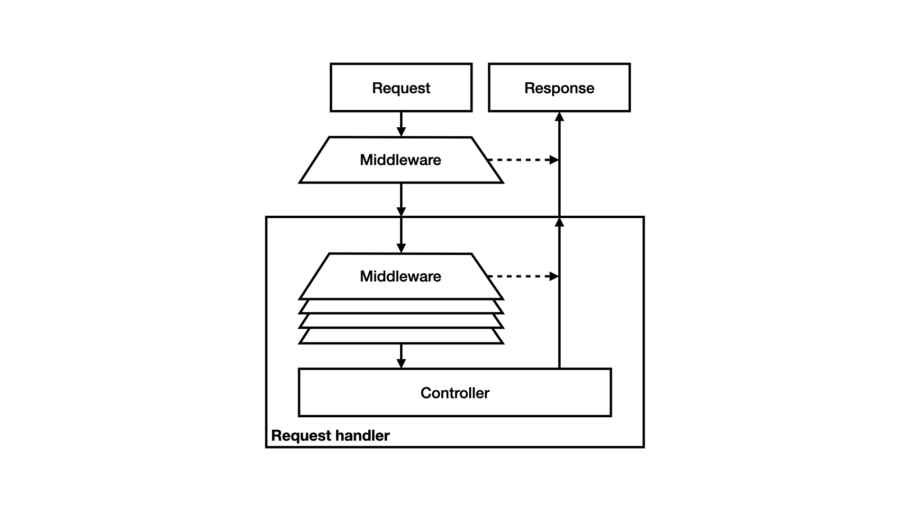

Middleware#
We gebruiken ondertussen een behoorlijk aantal services in de kernel. De
kernel gebruikt bijvoorbeeld services voor authenticatie, autorisatie en
routing. Het is bovendien denkbaar dat er nog meer services in de kernel
gebruikt zouden worden. Zo zou je een service kunnen hebben die de header
Accept-Language leest en aan de hand hiervan een taal als attribuut
toevoegt aan het request, zodat de pagina in de gewenste taal getoond kan
worden. Tot nu toe voegden we services ad hoc toe aan de kernel als we ze
nodig hadden, maar dit is geen schaalbare of generieke oplossing.
We kunnen dit generaliseren door al deze services op dezelfde manier aan te spreken. De gedachte is dat deze services als een soort lagen om de kernel liggen, en ieder mogelijk iets willen doen met het request of de response. Deze lagen worden meestal middleware genoemd.
Chain of responsibility#
Middleware kan volgens het chain of responsibility pattern geïmplementeerd worden. Dit pattern houdt in dat er een lijst met middleware is, die als een ketting aan elkaar gekoppeld worden. Bij het binnenkomn van een request wordt dit request naar de eerste middlewarelaag gestuurd. Deze laag mag het request zelf afhandelen. Denk hierbij bijvoorbeeld aan de al besproken firewall; als de gebruiker niet geautoriseerd is om een bepaalde route te zien kan de firewall een response met een foutpagina maken. De middleware hoeft het request echter niet af te handelen; in dat geval roept de middleware de volgende schakel in de keten aan, die op zijn beurt weer de gelegenheid krijgt om het request af te handelen. Uiteindelijk komt het request in de kernel zelf terecht, als geen van de middlewarelagen iets met het request kan of wil doen. Dan kan er bijvoorbeeld een foutpagina getoond worden met het bericht dat de pagina niet gevonden kon worden.
PSR-15 beschrijft twee interfaces die
gebruikt kunnen worden om dit pattern te implementeren. Bij het bespreken
van requests en responses hebben we een vereenvoudigde versie van PSR-7
besproken, dus gebruiken we ook een iets aangepaste versie van de interfaces
van PSR-15. De interface MiddlewareInterface wordt gebruikt voor de
middlewarelagen.
namespace Framework\Kernel;
interface MiddlewareInterface
{
function process(RequestInterface $request, RequestHandlerInterface $handler): ResponseInterface;
}
Deze interface heeft een enkele methode process die de middleware de
gelegenheid geeft iets met een request te doen. De middleware kan ervoor
kiezen om zelf een response terug te geven, en daarmee de rest van de
request handling buitenspel te zetten, of om de request, eventueel in
aangepaste vorm, door te sturen naar de volgende keten in de middlewarelaag.
Bij dit laatste kan gedacht worden aan authenticatiemiddleware, die een
gebruiker als attribuut toevoegt aan het request maar zelf geen response
genereert. Om de volgende middlewarelaag aan te kunnen spreken is een
request handler beschikbaar als tweede parameter. De request handler
implementeert de interface RequestHandlerInterface en heeft een enkele
methode handle die een response teruggeeft bij een bepaald request.
namespace Framework\Kernel;
interface RequestHandlerInterface
{
function handle(RequestInterface $request): ResponseInterface;
}
De interface RequestHandlerInterface is heel generiek en doet denken aan
het gedrag van een controller, maar in dit geval kan ook de rest van de
middlewarestack, dus alle lagen die na de huidige laag nog uitgevoerd moeten
worden, beschouwd worden als request handler. Er gaat immers een request in
en ergens moet er een response uit komen. Dit is dan ook de request handler
die aan de huidige middlewarelaag wordt meegegeven.

Event handling#
Een alternatieve aanpak, die hier alleen kort genoemd zal worden maar niet verder uitgewerkt, is het gebruik maken van het observer pattern
Dit wordt vaak door middel van een event dispatcher gedaan. In PSR-14 is bijvoorbeeld een aantal interfaces te vinden die dit pattern beschrijft.
De event dispatcher kan arbitraire events versturen. Een voorbeeld van een
dergelijk event is een request event, een event dat door de kernel verstuurd
wordt als een request ontvangen wordt. In PSR-14 is de bijbehorende
interface de interface EventDispatcherInterface, met een enkele methode
dispatch.
namespace Psr\EventDispatcher;
interface EventDispatcherInterface
{
function dispatch(object $event): object;
}
Als een event wordt verstuurd, moet de dispatcher weten welke objecten
geïnteresseerd zijn in dit event. In PSR-14 wordt hier een aparte interface
ListenerProviderInterface voor gebruikt met een methode
getListenersForEvent, die een lijst listeners moet teruggeven die
geïnteresseerd zijn in het gegeven event. Alternatief kan dit ook in de
event dispatcher zelf geregeld worden.
namespace Psr\EventDispatcher;
interface ListenerProviderInterface
{
function getListenersForEvent(object $event): iterable;
}
In PSR-14 wordt interesse normaal gesproken op klasseniveau bepaald; dat wil zeggen dat een object kan aangeven geïnteresseerd te zijn in alle events van een bepaalde klasse. In andere implementaties kan het zo zijn dat een event bijvoorbeeld een bepaald id heeft.
Events worden normaal gesproken aan alle listeners gestuurd, maar soms wil
een listener aangeven dat verdere afhandeling niet nodig is. Als
bijvoorbeeld een listener constateert dat de gebruiker een bepaalde pagina
niet mag zien, heeft het geen nut om nog andere listeners aan te spreken.
Hiervoor is de interface StoppableEventInterface beschikbaar. Deze
interface bevat de method isPropagationStopped waarmee gekeken kan
worden of het event niet verder afgehandeld moet worden; het
daadwerkelijk stoppen van de verdere afhandeling is
implementatiespecifiek. Dit concept is vergelijkbaar met de JavaScript-methode
stopPropagation.
namespace Psr\EventDispatcher;
interface StoppableEventInterface
{
function isPropagationStopped(): bool;
}
In de context van een kernel kan dit systeem gebruikt worden als alternatief voor een chain of responsibility. Er zal dan een eventklasse moeten bestaan waarin een request wordt opgeslagen en een response kan worden opgeslagen. Geïnteresseerde middlewarelagen melden zich aan bij de event dispatcher en de kernel verstuurt bij elk request een dergelijk event. Een middlewarelaag, of in de termen van de event dispatcher een listener, kan dan het request aanpassen en eventueel een response in het event zetten. Na afloop van de event handling kan de response die uiteindelijk in het event staat naar de client worden gestuurd.